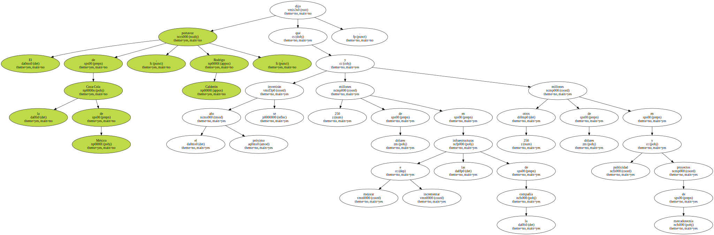
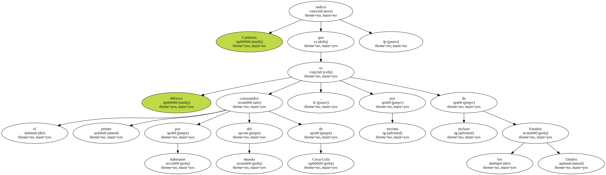
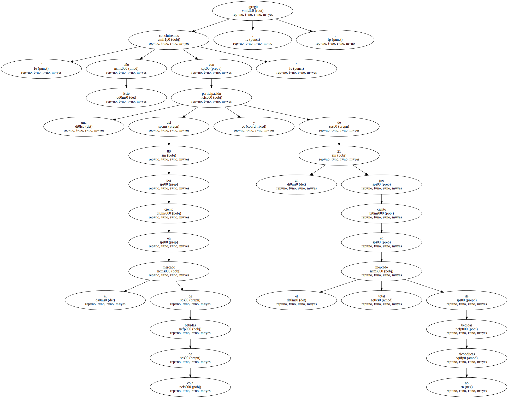
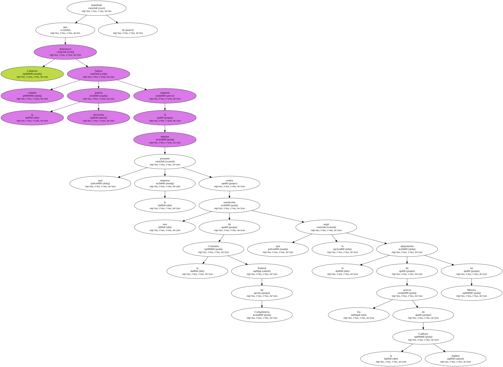
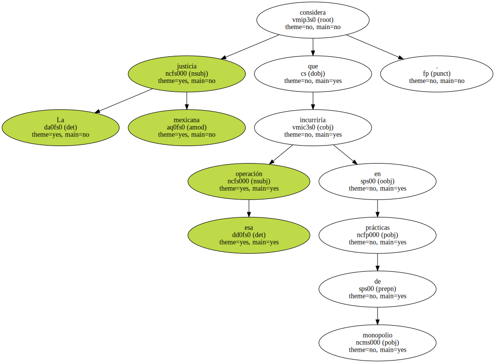

La filial mexicana de la multinacional Coca-Cola invertirá 500 millones de dólares en el 2001 en proyectos de expansión y mercadotecnia , informaron hoy a EFE fuentes de la empresa.

El portavoz de la Coca-Cola de México , Rodrigo Calderón , dijo que el próximo año se invertirán 250 millones de dólares en mejorar e incrementar las infraestructuras de la compañía y otros 250 millones de dólares en publicidad y proyectos de mercadotecnia.
Calderón indicó que México es el primer consumidor por habitante del mundo de Coca-Cola , por encima incluso de los Estados Unidos.
" Este año concluiremos con una participación del 80 por ciento en el mercado de bebidas de cola y de un 21 por ciento en el mercado total de bebidas no alcohólicas " , agregó.
Calderón manifestó que desconoce cuándo fallará la justicia mexicana respecto al amparo que presentó la empresa contra una resolución de la Comisión Federal de Competencia que le negó la adquisición de los activos de la inglesa Cadbury en México.
La justicia mexicana considera que esa operación incurriría en prácticas de monopolio.
